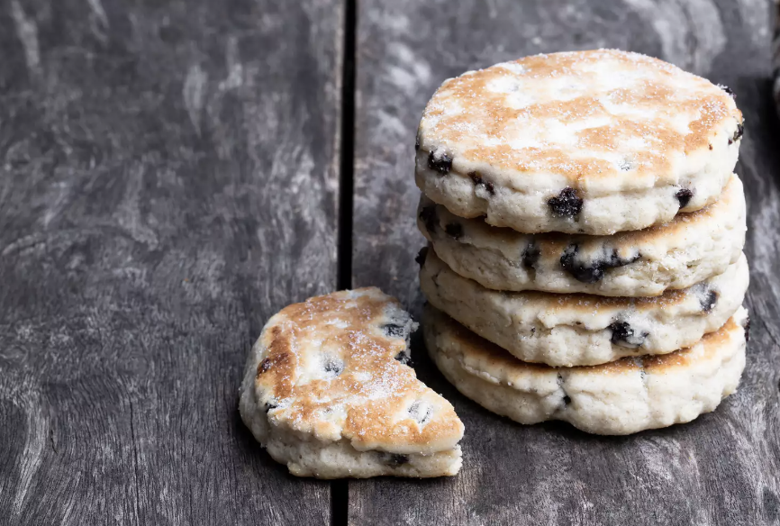

Welshcakes

Ingredients
- 225g of self-rasising flour
- 1 pinch of salt
- 100g of butter
- 50g of caster sugar, plus extrax for sprinkling
- 50g of currants
- 1 egg, beaten with 3tbsp of milk
Method
- Mix the flour and salt together in a large bowl and rub in the butter. Add the sugar and currants, stir well.
- Pour the egg mixture in and mix until you have stiff dough.
- Roll the dough out on a lightly floured board until 5mm (1/4 inch) thickness and stamp out rounds with a pastry/biscuit cutter.
- Heat the griddle over a medium heat until hot and grease with a little butter. (A heavy cast iron frying pan makes a good substitute)
- Cook the Welshcakes for about 3-4 minutes each side, until golden brown and have risen slightly.